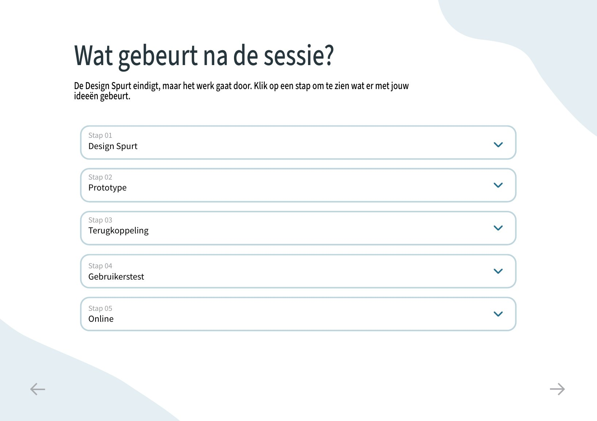
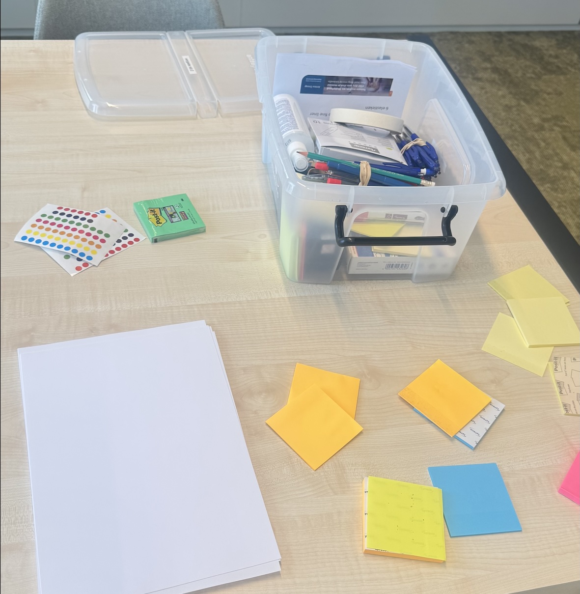

Better prepared for a Design Spurt
An interactive digital booklet that prepares participants before the session for what they can expect.
- Role: UX/UI Designer
- Period: Feb 2026 – June 2026
- Client: Antea Group
- Tools: Figma, Miro, Adobe InDesign & Adobe Acrobat
In short
- Problem
- A broad question: how can Antea Group's Design Spurt run better? Where the problem was, was not yet clear.
- What I did
- Independent research: 4 interviews with an organiser and participants of the Design Spurt, an observation of a live session and desk research into similar sessions. Then a co-creation session with stakeholders and an interactive prototype, tested with 2 participants.
- Result
- A six-page interactive Participant Pack that lets new participants prepare on their own in about 10 minutes. Improved after testing and delivered to Antea Group.



Introduction
The Design Spurt is a compact version of the Design Sprint: in one day, a small group moves from a challenge to a shared solution direction. Everyone at the table has a fixed role, so there is always someone thinking along on behalf of the target group.
Duration
One day, from 10:00 to 16:00.
Who is at the table?
A small group of colleagues or external parties, each with a role: facilitator, idea owner, expert, someone representing the user, decider and UX designer.
Target group of my project
Antea Group colleagues and clients who take part in a Design Spurt, both experienced and new participants.
How a Design Spurt works
First, the group creates a problem map, so everyone has the same picture of the challenge. Then everyone sketches solutions on their own, and dot voting brings the strongest ideas to the surface. These are presented and, at the end of the day, worked out in a storyboard. That storyboard is the basis the UX designer uses to build a prototype.
Problem map
Individual sketching
Dot voting
Presenting ideas
Storyboard

When I started this project, it had not yet been decided which part of the Design Spurt needed improving. Antea Group wanted the session to run more efficiently and lead to better results, and gave me the freedom to research where the biggest UX opportunity was. So my first step was to understand what participants and facilitators ran into in practice.
Original design question
How can the facilitator of a Design Spurt be better supported, so that participants can collaborate more efficiently and deliver quality input for the design process?
Double Diamond
For this project I worked with the Double Diamond model: Discover, Define, Develop and Deliver.
I chose this model because my assignment started with an open question. I didn't know yet what to improve, so I couldn't start designing a solution right away. The first diamond pushed me to research broadly first and then consciously choose one problem. Only then, in the second diamond, did I come up with ideas and test them.
Because every phase first opens up and then narrows down, I had to make a choice at every step and back it up. That kept the project focused and let me show each time why I went in a certain direction.

First, understand where the problem really is
Because the assignment was still broad, I first wanted to understand how the Design Spurt currently runs. I combined four methods: that way I didn't just hear what people said, I also saw what happened during a real session. Then I checked my findings against existing knowledge.
One expert, two roles
I started with Matthijs, a UX designer at Antea Group. In one Design Spurt he is the facilitator, in another the UX designer. That's why he knows the process from both roles, which made him a logical starting point.
- Participants don't know in advance what is expected of them.
- There is no fixed place with information about the Design Spurt.
- Because of time pressure, there is no room for inspiration material or an expert interview during the session.
- The output is not stored in a fixed way.
"There is currently no fixed place where participants can read what a Design Spurt is and what is expected of them."
Observing a real session
People don't always tell you what they really do. So I observed a full Design Spurt at Antea Group. I didn't take part myself (fly on the wall), so I wouldn't influence the session.
- The opening and onboarding took ±25 minutes, because participants had questions about their role and what was expected of them.
- During sketching, examples were missing, so participants were unsure what to make.
- The session ran over. Because of that, the participant representing the user had to leave early, and the team missed that perspective for the rest of the day.
- The output was collected, but not stored centrally.
- What worked well: the fixed structure with a decider and a timer kept the group focused.
"Why doesn't the invitation say who has which role?"
Talking to participants
Next, I spoke with three participants. I deliberately chose people with different levels of experience, so I could compare what a new participant misses with what someone with experience still finds difficult.
- Laurens, little prior knowledge: missed clarity about the goal and the way of working, and wanted to know what happens with his input. He actually liked the low threshold.
- Maaike, took part before: could start easily thanks to her experience, but sees the value of one central place for information.
- Petra, took part before: notices that time pressure affects collaboration, and wants clear goals in advance and a system to record the output.
"I didn't really know what to expect beforehand." — Laurens
How do other sessions prepare participants?
When preparation kept coming up, I looked into how similar workshops inform participants in advance. I used Nielsen Norman Group, the Sprint method and research on cognitive load to check whether my findings also hold outside Antea Group.
- A short preparation in advance, with goal, context and examples, prevents time loss during the session.
- Unclear expectations lead to passive participation and less creativity.
- Without a fixed structure, the output of a session gets lost.
Where is the biggest opportunity?
I brought all findings together and clustered them with affinity mapping. Interviews, observation and desk research kept showing the same patterns. That made them more reliable, even though my sample was small. I grouped the findings by when they happen: before, during and after the Design Spurt.

No central place for information
The invitation only contains the date and time of the session, and there is no place where participants can read in advance what a Design Spurt is. So onboarding only happens during the session.
Different levels of knowledge
Experienced participants can start right away, new participants first need to understand what is expected of them.
Unclear expectations
Without examples and clear instructions, participants hesitate, for example while sketching. That costs time.
Output gets lost
Notes and sketches aren't stored in a fixed place, and participants hear little about what happens with their input.
The Design Spurt itself works well. The opportunities lie before and after the session. New participants in particular start without a clear picture: they don't know what the session involves, why they are there and what is expected of them. So the start of the day goes to explaining the process, while the attention should go to the challenge itself.
What is missing now
| Now | Desired | What is missing |
|---|---|---|
| Participants start without preparation | Participants start prepared and informed | A central place for information |
| Unclear what their role and contribution is | Clear expectations about role and contribution | A fixed way of preparing |
| Onboarding during the session (±25 min) | Onboarding before the session | Clear instructions and examples |
| Output is not stored centrally | Output is stored centrally and reusable | Structured archiving |
Both the preparation before the session and the archiving afterwards were real opportunities. Because I had little time, I couldn't work out both properly. I chose preparation: that problem came back in every source and affects the start of every session.
I also deliberately left out an expert interview during the session. It is valuable, but it takes time: according to Matthijs it doesn't fit into one day. And the session itself already works well; the biggest gain was before it.
My goal became: give participants enough context in advance to start the Design Spurt with more clarity and fewer process questions.
Refined design question
How can Design Spurt participants be prepared independently for the method, their role and the flow of the session, so that they take part well prepared without it costing session time?
After the research, I refined my design question. Supporting the facilitator is still the goal: when participants arrive prepared, the facilitator needs to explain less during the session and there is more time left for the challenge. The solution just doesn't lie with the facilitator, but with how participants are prepared.
Reflection on my research
- My sample was small: 3 participants, 1 organiser and 1 observed session. The insights are indicative, not representative.
- The strength was in combining methods: the same pain points came back in interviews, observation and desk research.
- Next time I would observe more sessions, talk to more facilitators and participants, and validate the patterns with a short survey.
How can we prepare new participants better?
With the refined design question as a starting point, I organised and facilitated a co-creation session with stakeholders who know the Design Spurt from different roles. The session lasted one hour. So I chose every method deliberately, to get from many ideas to one well-founded choice in that time.

Brainwriting
Everyone first came up with ways to inform new participants in advance, on their own and on paper.
Why: my desk research showed that brainstorming together straight away leads to dominance and less diverse ideas. Writing first gave everyone equal room, and it's faster than an open discussion.
Building on ideas
Then we shared the ideas and participants built on each other's solutions.
Why: the stakeholders know the Design Spurt from different roles. Building on each other's ideas combined those perspectives, without starting over each time.
Dot voting
Next, everyone voted for the ideas they felt best answered the design question.
Why: in a few minutes you see where the most support is, and everyone's vote counts equally. Participants already knew the method from the Design Spurt, so no explanation was needed.
Impact / effort
We compared the strongest ideas on impact for new participants and on feasibility within my graduation project.
Why: voting shows what people like, but not what is feasible. This comparison made sure the chosen direction could actually be worked out within my time.
From digital flyer to Participant Pack
The session produced ideas such as a short intro video, a clearer preparation format and a digital flyer to send along with the invitation. The digital flyer got the most votes: short, low-threshold and easy to share.
But a flyer has little space. From my research I knew that new participants want to know what a Design Spurt is, why they are taking part, what their role is and how the day goes. Put all of that on one flyer and it becomes busy and cluttered.
I kept what the group liked about the flyer: short, digital and easy to share. But I worked it out as an interactive Participant Pack: a small digital booklet where every page stays short and extra explanation only appears when you click. That way all the information fits, without it getting cluttered.
How did I build the Participant Pack?
The research decided which information had to go in: the questions new participants asked in the observation and interviews. Theory helped me decide how to present it.
Short & clear
Only the information new participants need to understand what awaits them during the Design Spurt.
In small steps
The information is spread over short pages, so participants don't have to process everything at once.
Extra explanation when needed
Additional information, for example about roles or next steps, only appears when a participant clicks on it. New participants get enough explanation, without overloading experienced ones.
Available before the session
The Participant Pack is sent with the invitation, so the explanation happens before the Design Spurt.
Why these design choices?
According to Sweller's Cognitive Load Theory (1988), people can only process a limited amount of information at once. That is the reason for the short pages and the extra explanation you open yourself.
I also drew on the day-0 call from the article “Day-0 Calls” by Nielsen Norman Group (Brown, 2022). That is a short online meeting with all participants, a few days before a workshop. The group agrees on the goals together and the facilitator shows what participants can expect. That way nobody starts the workshop surprised.
The Participant Pack takes over the second part: showing participants what to expect. Just like in the article, it doesn't contain the full agenda, only the outline. Agreeing on goals together is something the booklet can't do, because it isn't a conversation. That remains the facilitator's job at the start of the session.
Why an interactive PDF?
There was no budget for this project. Within Antea Group, a website would require hosting, maintenance and coordination with IT. A PDF can be attached to the invitation at no extra cost, and participants don't have to learn a new tool.
The downside: not every PDF viewer supports buttons and clickable elements. This also came up in the test, and I took it into account.
A general booklet, a specific invitation
I wanted to design the Participant Pack so it doesn't need to be adapted for every session. That's why it contains general information: what a Design Spurt is, how the day goes and which roles there are.
What differs per session belongs in the invitation. Right now it only contains the date and time. My advice to Antea Group: send the booklet with the invitation and add two things:
- A short intro about the product or problem the session will improve.
- Who has which role, so everyone knows in advance who does what.
Explore the Participant Pack yourself
I first worked out the chosen direction as a mid-fidelity version, which I discussed with my supervisor, a UX designer at Antea Group. Based on that feedback I built an interactive high-fidelity PDF in InDesign, in Antea Group's house style. I tested that version with two colleagues, and the final version followed.
The booklet has six pages: a welcome page, what a Design Spurt is, the roles, the flow of the day, what happens after the session and a short self-check. Below you can click through the final version yourself.
Booklet not working well in your browser? Open the interactive booklet in a new tab →
Testing with two different perspectives
I wanted to know whether new participants can use the booklet on their own and whether they know better what to expect afterwards. So I ran a small usability test, aimed at finding improvements.
- Thinking aloud: testers acted as if they had just received a real invitation and said out loud what they thought, expected and where they hesitated.
- Six scenarios: starting the booklet, finding your role, viewing the day, navigating, looking up what happens after the session and completing the self-check.
- Questionnaire: afterwards they rated the booklet on clarity, ease of use, added value, amount of information and how it felt. Each test took about 45 minutes per tester.
I deliberately chose two colleagues with different perspectives. Luuk, data advisor, had never taken part in a Design Spurt. That let me test whether the booklet works without prior knowledge. Wies, developer with a design background, had taken part once. Wies could critically assess both the technology of the interactive PDF and the structure of the booklet.
| Part | What did I find? | Design decision |
|---|---|---|
| Purpose of the booklet | Both testers immediately saw it as preparation for the Design Spurt. | Keep the short introduction. |
| Roles | The difference between expert, idea owner and decider was unclear. Neither knew for sure which role was theirs. | Add a concrete example per role and put each person's own role in the invitation. |
| Starting | The start button didn't work in Wies's PDF viewer. In another viewer it worked fine. | Make the button clearer and mention in the invitation that the booklet works best in Adobe Acrobat Reader. |
| Clickability and navigation | Not every element looked clickable, the arrows stood out less and page numbers were missing. | Style clickable elements more consistently, label the arrows "previous" and "next" and add page numbers. |
| After the session | Both testers found this important. The word "prototype" was too vague for them. | Explain more concretely what happens with the input, and describe "prototype" as "first clickable version". |
| Added value | Valuable when you're unsure about the process. People who are busy might skip it. | Briefly explain in the invitation why the booklet is worth it: 10 minutes, and you'll get going faster. |
"I don't know where the line is between expert, idea owner and decider."
"I find the start button unclear. But that's really because I don't expect a button in a PDF."
Both testers could go through the booklet on their own. Luuk described it as calming, pleasant and familiar: exactly the feeling of reassurance I wanted to give. So the direction is right; the improvements are mainly in the details and in the invitation around it.
I processed the feedback in the final version above, which I delivered to Antea Group together with a report. With two testers this is a first validation. The next step is a second test round with more participants.
From a broad question to a focused UX solution
This project didn't start with the assignment to design a booklet. My original question was broad: researching how the Design Spurt could be better supported.
By observing the process, talking to participants and experts and bringing the results together, I discovered that the preparation before the session was a key opportunity.
Through co-creation I translated this insight into possible solutions and chose a short interactive Participant Pack. The final prototype helps participants understand, before the Design Spurt, what the session involves, what they can expect and what their role is.
A solution doesn't have to be big to improve a process. For me, the most important UX decision in this project wasn't in the design of the booklet, but in finding and scoping the right problem to solve.
I also learned to test the format itself early. That the buttons don't work in every PDF viewer is something I could have found sooner by opening the booklet on different devices and viewers right away.
If I had more time
- A second test round with four more participants, to check whether the changes really work.
- Testing in a real situation: sending the booklet before a real Design Spurt and measuring whether onboarding gets shorter than the current ±25 minutes.
- Designing the invitation email and testing it together with the booklet, so the email actually convinces participants to open it.
- Working out archiving after the session: the second opportunity from my research, which I deliberately left aside.